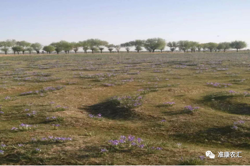
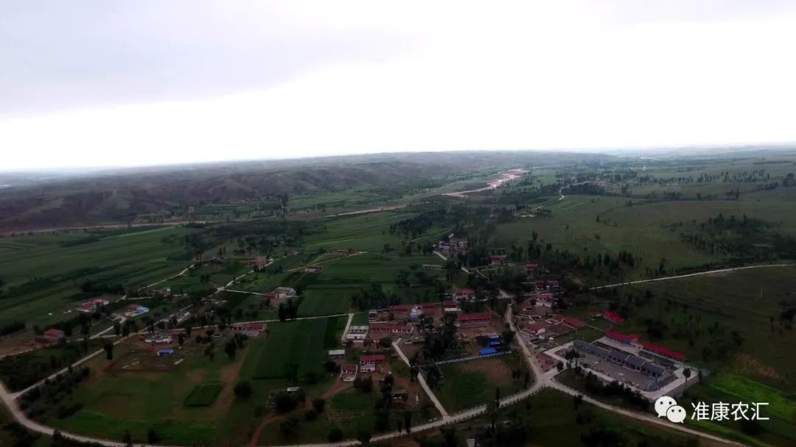

贾浪沟村因境内的贾浪沟得名。“贾浪”系蒙古语，意为“穗”，因此沟发源于多条毛沟得名，位于纳林河大川西部，南邻西营子村、北邻榆树塔109国道、东邻纳林村，距离沙圪堵政府所在地15公里，总占地面积106平方公里，交通便利。

设16个社其中有5个移民社，共有人口868户1817人，现在村内居住有180户296人。其中少数民族95户185人。有村干部11名，党员39名，大学生村官1名。全村总计有党员39人，其中40周岁以下7名，高中9名，大学5名，复转军人2名，女性党员7名，年轻后备干部3名。